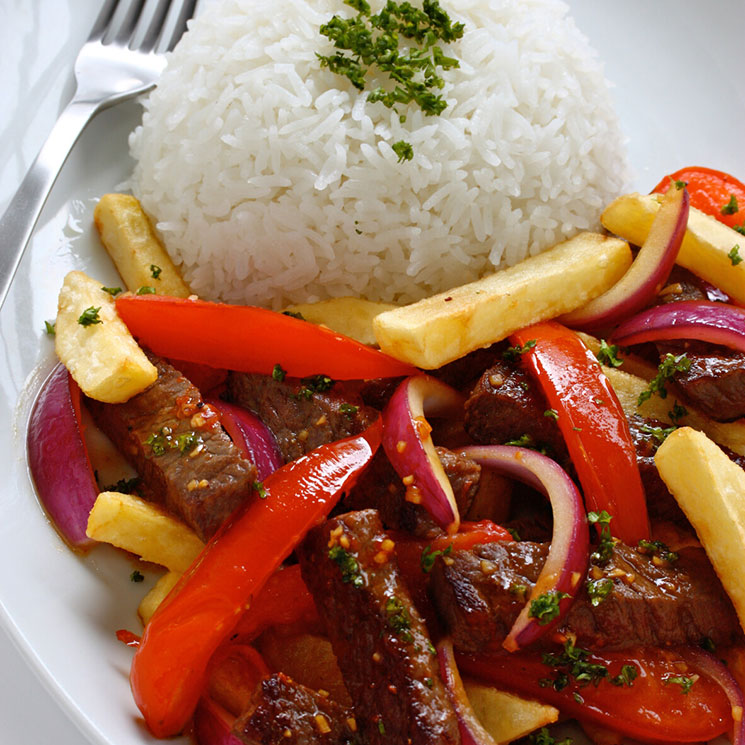

Receta de Lomo Saltado
Para preparar lomo saltado necesitarás:
- 1/2Kg lomo picado en tiras
- 3 Cucharadas de aceite vegetal
- 2 dientes de ajo picados
- 1 Cebolla morada cortada en rodajas
- 2 Tomates cortados en rodaja gruesas
- 1 Pimentón rojo cortado en tiras
- 3 Cucharadas de salsa de soya
- 3 Cucharadas de vinagre de vino tinto
- 1/3 Taza de caldo de res
- 1/2 Taza de cilantro picado
- Sal y pimienta al gusto
- 2 Tazas de papas fritas
- Arroz blanco para acompañar
Preparación
- Sazonar el lomo con la sal y pimienta.
- En un wok caliente a fuego muy fuerte se agrega el aceite y dejamos que caliente bien.
- Añade el lomo por partes, salteando rápidamente para que dore y no se humedezca.
- Agrega el ajo, cebolla y tomate y pimenton, saltea todo por aproximadamente 2 a 3 minutos, recuerda que los tomates y la cebolla deben estar crujientes, no blandos.
- Incorpora la soya y el vinagre en los lados de la sartén y mezcla todo, recuerda verificar la sazón.
- Apaga el fuego, rocía con cilantro y sirve de inmediato con papas fritas y arroz blanco.